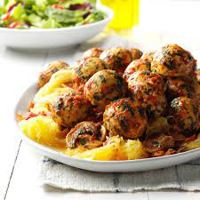
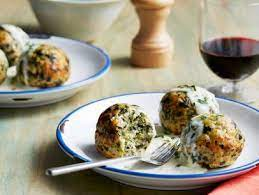

Chicken Florentine Meatballs


Served over squash and a chunky,
mushroom-tomato sauce, these tender meatballs are tops when it comes to great flavor
Ingredients
- 2 large eggs, lightly beaten
- 1 package (10 ounces) frozen chopped spinach, thawed and squeezed dry
- 1/2 cup dry bread crumbs
- 1/4 cup grated Parmesan cheese
- 1 tablespoon dried minced onion
- 1 garlic clove, minced
- 1/4 teaspoon salt
- 1/8 teaspoon pepper
- 1 pound ground chicken
- 1 medium spaghetti squash
- 1/2 pound sliced fresh mushrooms
- 2 teaspoons olive oil
- 1 can (14-1/2 ounces) diced tomatoes, undrained
- 1 can (8 ounces) tomato sauce
- 2 tablespoons minced fresh parsley
- 1 garlic clove, minced
- 1 teaspoon dried oregano
- 1 teaspoon dried basil
Procedure
- In a large bowl,
combine the first eight ingredients. Crumble chicken over mixture
and mix well. Shape into 1-1/2-in. balls.
- Place meatballs on a rack in a shallow baking pan.
Bake, uncovered, at 400° for 20-25 minutes or until
no longer pink. Meanwhile, cut squash in half lengthwise;
discard seeds. Place squash cut side down on a microwave-safe plate.
Microwave, uncovered, on high for 15-18 minutes or until tender.
- For sauce, in a large nonstick skillet, saute mushrooms in oil until tender.
Stir in the remaining ingredients. Bring to a boil. Reduce heat; simmer,
uncovered, for 8-10 minutes or until slightly thickened. Add meatballs and heat through.
- When squash is cool enough to handle, use a fork to separate strands. Serve with
meatballs and sauce.Freeze option: Place individual portions of cooled
meatballs and squash in freezer containers. To use, partially thaw in
refrigerator overnight. Microwave, covered, on high in a microwave-safe dish
until heated through, gently stirring and adding a little water if necessary.
Click To Return